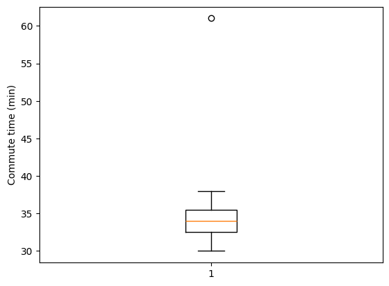
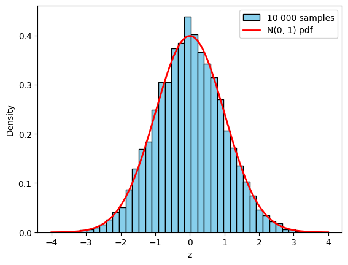
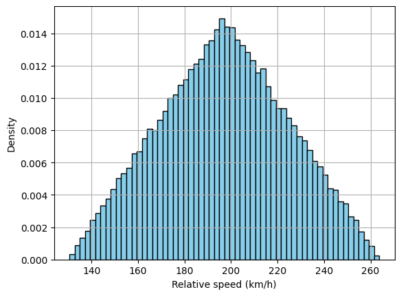
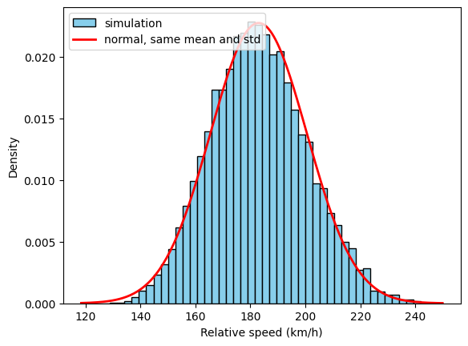
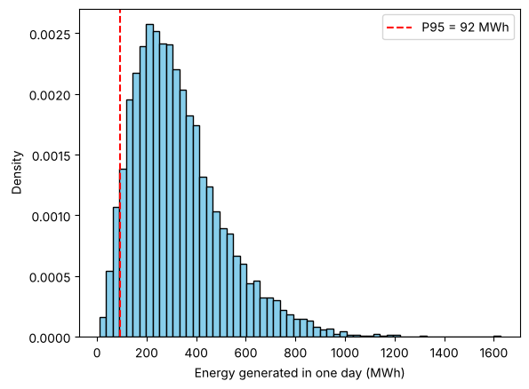
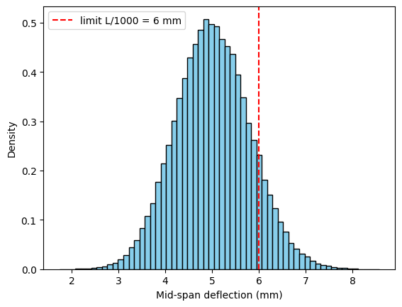

PART A
The theory of Monte Carlo simulation
What Monte Carlo simulation is and why engineers need it, the kinds of uncertainty we meet, where random numbers come from, and how to read the pile of results a simulation produces. One example runs through the whole of Part A: the relative speed of two cars.
1What is Monte Carlo simulation, and why do we need it?
Monte Carlo simulation is a computational method that uses repeated random sampling to estimate a result. Instead of one calculation with one set of input values, we run the same calculation thousands of times, each time with inputs drawn at random from their probability distributions, and study all the answers together: their range, their most likely value and their spread. It uses randomness to solve problems that might be deterministic in principle.
The method is named after the Monte Carlo Casino in Monaco, because of its reliance on chance. It was developed in the 1940s by scientists working on the Manhattan Project: Stanislaw Ulam and John von Neumann first used it to study neutron diffusion. It has since become a standard tool in science and engineering.
Why we need it. Engineering inputs are rarely known exactly: loads, material properties, traffic volumes, task durations and costs all vary. A calculation with one best guess per input gives one answer, but not how far off it could be. The questions we usually need to answer are about the whole range of outcomes:
- What range of outcomes is possible?
- What is the most likely outcome?
- What is the chance of exceeding a limit?
For simple models, probability theory gives exact answers. For realistic models it quickly becomes impossible. Monte Carlo simulation works for any model you can write as code.
A first taste: estimating π. Throw random points uniformly into the unit square. The quarter circle \(x^2 + y^2 < 1\) covers an area of \(\pi/4\), so the share of points that land inside it approaches \(\pi/4\). Four times that share estimates π. The more points, the better the estimate.
import numpy as np
np.random.seed(0)
for n in [100, 10_000, 1_000_000]:
x = np.random.rand(n)
y = np.random.rand(n)
inside = np.mean(x**2 + y**2 < 1) # share inside the circle
print("N = %9d pi is about %.4f" % (n, 4 * inside))N = 100 pi is about 3.2400 N = 10000 pi is about 3.1452 N = 1000000 pi is about 3.1385
The estimate improves slowly: 100 times more points gives only about 10 times smaller error. The error of a Monte Carlo estimate shrinks like \(1/\sqrt{N}\), which is why simulations use thousands to millions of trials.
2Types of uncertainty
Engineering models meet three kinds of uncertainty.
Deterministic
The value is known exactly; the same inputs always give the same output.
e.g. the span of a beam set by the design; \(g = 9.81\) m/s².
Stochastic (random)
The value varies from one occurrence to the next, described by a probability distribution.
e.g. traffic volume, wind speed, the strength of concrete cubes.
Resolutional (fuzzy)
The value is vague: “about 100 km/h”. A fuzzy number gives each value a membership between 0 and 1.
e.g. expert judgement. Not covered further in this module.
Almost every real system behaves randomly to some degree, so treating its inputs as random variables (stochastic analysis) describes it best. Monte Carlo simulation is the most general way to carry out a stochastic analysis.
| Field | Random inputs | Question a simulation answers |
|---|---|---|
| Structural | wind, snow and floor loads; steel and concrete strength | chance of failure or of excessive deflection |
| Transport | traffic volume, vehicle speeds, share of trucks | travel time, queue length at a junction |
| Manufacturing | dimensions within tolerance, machine breakdowns | will the parts fit? scrap rate |
| Electrical | resistor and capacitor tolerances, noise | range of the output voltage |
| Water and environment | rainfall, river flow | flood level exceeded once in 100 years |
| Project management | activity durations, material prices | chance of finishing on time and on budget |
3Two cars: from crisp numbers to simulation
Two cars travel in opposite directions. Their relative speed, the rate at which the gap between them closes, is the sum of their speeds: \(r = v_A + v_B\). We make the example more realistic in three steps.
Step 1: crisp numbers
With exact (crisp) speeds, \(v_A = 90\) km/h and \(v_B = 110\) km/h, the answer is deterministic: \(r = 200\) km/h. But no driver holds exactly 90 km/h, and we do not know in advance how fast a particular driver will go.
Step 2: speed intervals
Example 1. Two cars travel at speeds that are uniformly distributed between 65 km/h and 132 km/h. If they travel in opposite directions, what is their relative speed, represented as a probability distribution?
Suppose first that we only know each speed lies somewhere in the interval [65, 132] km/h. Interval arithmetic adds the lower bounds and adds the upper bounds, giving a new interval:
The interval tells us the range of possible relative speeds, and it is easy to calculate by hand. But it says nothing about which speeds are more likely: every value inside it is treated the same. Answering Example 1 as a probability distribution needs probability, and that is where simulation comes in: section 7.1 simulates Example 1.
Step 3: realistic distributions
Car A is a cautious driver: between 60 and 140 km/h but mostly 70 to 90 km/h. We model this with a beta distribution, which lives on \([0, 1]\), scaled and shifted: \(v_A = 60 + 80\,\text{Beta}(2, 5)\). Car B follows a normal distribution, \(v_B \sim N(\mu = 100, \sigma = 12)\) km/h.
The exact distribution of the sum is the convolution integral
For a beta plus a normal there is no closed-form result, and with more inputs or a non-linear model the integral becomes hopeless. So we stop trying to derive the answer and compute it instead: let the computer repeat the experiment thousands of times. That is Monte Carlo simulation, and we code it in section 7.
4How Monte Carlo simulation works
Every Monte Carlo simulation has the same structure:
- Inputs are randomly sampled from their probability distributions.
- The process (the model) computes an output for every set of sampled inputs. The model itself is deterministic: an equation, a Python function or a large simulation model.
- The outputs, collected together, form a new distribution, which we plot as a histogram and summarise with statistics.
As a recipe in five steps:
- Define the problem. Identify the output of interest and the uncertain input parameters. Two cars: output r; inputs \(v_A\), \(v_B\).
- Assign probability distributions. Describe the uncertainty of each input with an appropriate distribution, from data, standards or expert judgement. \(v_A = 60 + 80\,\text{Beta}(2,5)\), \(v_B \sim N(100, 12)\).
- Random sampling. Generate many random samples of the inputs. 10 000 values of each speed.
- Determine the outputs. Calculate the system output for each random sample. This can be a simple equation, a Python function, or a large, complex simulation model. \(r = v_A + v_B\), 10 000 times.
- Analyse the results. Histogram; summary statistics such as the mean, median and standard deviation; percentiles; the chance of exceeding a limit.
5Random numbers
Step 3 of every simulation needs random numbers. Where do they come from?
5.1 True random and pseudorandom numbers
True random numbers come from a physical process: dice, coin tosses, radioactive decay, atmospheric or thermal noise. They are genuinely unpredictable, which matters for cryptography and lotteries, but they are slow to generate, need special hardware, and cannot be repeated to check a result.
Pseudorandom numbers come from an algorithm, a pseudorandom number generator (PRNG), which starts from a number called the seed. They look random and pass statistical tests of randomness, but the whole sequence is determined by the seed.
| Advantages | Drawbacks | |
|---|---|---|
| True random | truly unpredictable | slow; needs hardware; cannot be repeated |
| Pseudorandom | fast; lightweight; reproducible (same seed, same numbers); good statistical properties | deterministic, so predictable if you know the algorithm and seed; periodic: the sequence eventually repeats |
A good PRNG has a long period, produces uniformly distributed numbers, is efficient and is reproducible. Built-in generators include rand/srand in C, the random module in Python, rand/randi in MATLAB, and NumPy’s np.random, which we use. Simulations use pseudorandom numbers; from here on we simply call them random numbers.
5.2 Inside a PRNG: the linear congruential generator
The simplest PRNG is the linear congruential generator (LCG). Each number is calculated from the previous one:
where \(\bmod\) is the remainder after division (% in Python), \(a\) is the multiplier, \(c\) the increment, \(m\) the modulus and \(X_0\) the seed. With \(a = 5\), \(c = 1\), \(m = 16\) and \(X_0 = 3\): \((5 \times 3 + 1) \bmod 16 = 0\), then \((5 \times 0 + 1) \bmod 16 = 1\), then 6, 15, 12, … After 16 numbers the sequence is back at 3 and repeats: its period is 16, far too short for a simulation. Practical generators use a very large \(m\).
import numpy as np
def rand_gen(seed, a, c, m, size):
"""Linear congruential generator: size numbers in [0, 1)."""
numbers = np.zeros(size)
numbers[0] = seed
for i in range(1, size):
numbers[i] = (a * numbers[i - 1] + c) % m
return numbers / m
print(rand_gen(3, 5, 1, 16, 20) * 16) # X values: period 16
u = rand_gen(3, 7**5, 102435, 2**31 - 1, 10_000)
print(" ".join("%.4f" % x for x in u[:5]))
print("mean %.3f (U(0, 1) has mean 0.5)" % u.mean())[ 3. 0. 1. 6. 15. 12. 13. 2. 11. 8. 9. 14. 7. 4. 5. 10. 3. 0. 1. 6.] 0.0000 0.0001 0.1964 0.1419 0.6822 mean 0.505 (U(0, 1) has mean 0.5)
Real generators are more sophisticated (NumPy uses PCG64 by default; Python’s random uses the Mersenne Twister), with periods of \(2^{128}\) or more, but the idea is the same. In NumPy, np.random.seed() sets the seed: the same seed gives exactly the same numbers, which makes a simulation reproducible.
import numpy as np
np.random.seed(42)
print(np.random.rand(3))
np.random.seed(42)
print(np.random.rand(3)) # the same three numbers again
print(np.random.rand(3)) # the sequence continues[0.37454012 0.95071431 0.73199394] [0.37454012 0.95071431 0.73199394] [0.59865848 0.15601864 0.15599452]
5.3 Random numbers in NumPy
NumPy can generate random numbers from many well-known distributions, including uniform, normal, beta, exponential, chi-square and binomial. Each function returns a NumPy array.
| Function | Gives |
|---|---|
np.random.seed(42) | fixes the starting point: the same numbers every run |
np.random.rand(n) | n values from U(0, 1); np.random.rand(2, 3) gives a 2 × 3 array |
np.random.uniform(a, b, n) | U(a, b) |
np.random.normal(μ, σ, n) | normal distribution, mean μ, standard deviation σ |
np.random.randn(n) | standard normal N(0, 1) |
np.random.beta(α, β, n) | beta distribution, values between 0 and 1 |
np.random.exponential(1/λ, n) | exponential distribution with rate λ |
import numpy as np
x = np.random.rand() # one random sample from U[0, 1]
y = np.random.rand(10) # ten random samples from U[0, 1]
z = np.random.rand(2, 3) # a 2x3 matrix of samples from U[0, 1]
print(x, y, z, sep="\n\n")Differs from the PDF. The handout writes np.random.rand((2, 3)). rand takes each dimension as a separate argument, so the tuple version raises a TypeError. Use np.random.rand(2, 3), or np.random.random((2, 3)) if you prefer a tuple.
# 3x4 matrix from a normal distribution with mean 0 and standard deviation 10
x_normal = np.random.normal(loc=0, scale=10, size=(3, 4))
# 2x2 matrix from a beta distribution with parameters 0.5 and 0.75
y_beta = np.random.beta(a=0.5, b=0.75, size=(2, 2))
# 5x5 matrix from the standard normal distribution (mean 0, std 1)
z_snormal = np.random.randn(5, 5)
print(x_normal, y_beta, z_snormal, sep="\n\n")The newer NumPy interface, rng = np.random.default_rng(42) followed by rng.normal(...), rng.uniform(...) and so on, works the same way; you will meet it in the NumPy documentation. Either is fine in this module.
5.4 From U(0, 1) to any distribution
Random numbers from the uniform distribution on [0, 1] are the building block of every other distribution. A sample from an arbitrary uniform distribution \(U(a, b)\) is obtained by scaling, then shifting:
For example, \(u = 0.40\) gives the car speed \(65 + 0.40 \times (132 - 65) = 91.8\) km/h.
Differs from the PDF. The handout gives \((U(0,1) + a)(b - a)\). That expression spans \([a(b-a),\ (1+a)(b-a)]\), not \([a, b]\): for \(a = 0.6,\ b = 0.9\) it gives values between 0.18 and 0.48. Scale first, then shift, as above. Run the check below to see the difference.
a, b = 0.6, 0.9
u = np.random.rand(100_000)
correct = a + u * (b - a)
handout = (u + a) * (b - a)
print("a + U(b - a): min %.3f max %.3f" % (correct.min(), correct.max()))
print("(U + a)(b - a): min %.3f max %.3f" % (handout.min(), handout.max()))For any other distribution, the inverse transform method uses the cumulative distribution function \(F(x)\), the probability of a value up to \(x\), which climbs from 0 to 1. Draw \(u\) from U(0, 1) and solve \(F(x) = u\):
Example: the exponential distribution, with probability density \(f(x) = \lambda e^{-\lambda x}\) and \(F(x) = 1 - e^{-\lambda x}\), gives \(x = -\ln(1 - u)/\lambda\). With \(\lambda = 1.5\) and \(u = 0.46\), \(x = 0.411\).
import numpy as np
def inv_exponential(u, lam):
return -np.log(1 - u) / lam
print(round(inv_exponential(0.46, 1.5), 3)) # the worked example
np.random.seed(3)
x = inv_exponential(np.random.rand(100_000), 1.5) # 100 000 exponential samples
print("mean %.3f (exact value 1/λ = %.3f)" % (x.mean(), 1 / 1.5))0.411 mean 0.670 (exact value 1/λ = 0.667)
Distributions such as the normal, whose \(F\) has no simple inverse, are generated with other methods (for example rejection sampling). You do not need to code any of these: NumPy’s functions do it for you.
6Reading the results
A simulation produces thousands of output values. One trial tells us almost nothing; as the number of trials grows, the collection of results settles into a stable shape (convergence). Two tools describe that shape: the histogram, and summary statistics. The examples below use small datasets so that you can check the numbers by hand; the same functions work on 100 000 simulation results.
6.1 Histograms: bins and counts
The range of the results, from the smallest to the largest value, is split into equal bands called bins. The number of results in each bin is its count, drawn as the height of a bar. Too few bins hide the shape; too many make it noisy. With density=True, each bar is divided by \(N \times\) bin width, so the total area is 1 and the histogram can be compared with a probability density function.
import numpy as np
# 30 relative speeds from the two-cars simulation, km/h
r = np.array([181.5, 164.4, 176.0, 188.6, 194.8, 182.9, 164.6, 175.3, 164.6, 193.4,
152.3, 169.9, 187.7, 174.6, 214.2, 187.7, 196.8, 189.2, 184.5, 163.2,
169.0, 190.9, 166.9, 154.7, 166.2, 170.2, 185.0, 167.9, 186.6, 204.3])
counts, edges = np.histogram(r, bins=6)
print("bin edges:", np.round(edges, 1))
print("counts: ", counts, " total", counts.sum())bin edges: [152.3 162.6 172.9 183.2 193.6 203.9 214.2] counts: [ 2 10 5 9 2 2] total 30
plt.hist(r, bins=6) draws the same histogram.
6.2 Centre and spread: mean, median and standard deviation
- Mean \(\bar{x} = \frac{1}{N}\sum x_i\): the balance point of the histogram.
- Median: the middle of the sorted values; half the results lie below it, half above.
- Standard deviation \(\sigma = \sqrt{\frac{1}{N}\sum (x_i - \bar{x})^2}\): the typical distance from the mean, a measure of spread.
np.stddivides by \(N\);np.std(x, ddof=1)divides by \(N - 1\) (the sample formula). With thousands of results the difference is negligible.
import numpy as np
# commute time on 15 days, in minutes
times = np.array([32, 35, 31, 34, 38, 33, 36, 30,
34, 61, 35, 33, 37, 34, 32])
print("mean: ", round(np.mean(times), 1))
print("median:", np.median(times))
print("std: ", round(np.std(times), 1))mean: 35.7 median: 34.0 std: 7.1
One day with an accident (61 minutes) pulls the mean up by almost two minutes, while the median hardly moves. For skewed results, report both.
6.3 Mode and skewness
The mode is the most frequent value. It is most useful for discrete results such as counts; for continuous results every value is different, so the mode is read from the tallest bar of the histogram.
Skewness (for those who want more) measures asymmetry: which way the long tail points.
\(g = 0\) for a symmetric distribution (mean = median), \(g > 0\) for a long right tail (mean > median) and \(g < 0\) for a long left tail (mean < median).
import numpy as np
# trucks arriving at a weighbridge, per 5 minutes
trucks = np.array([3, 2, 4, 3, 5, 3, 2, 1, 3, 4,
2, 3, 6, 3, 2, 4, 3, 2, 5, 3])
values, counts = np.unique(trucks, return_counts=True)
print("values:", values)
print("counts:", counts)
print("mode: ", values[np.argmax(counts)])
times = np.array([32, 35, 31, 34, 38, 33, 36, 30,
34, 61, 35, 33, 37, 34, 32])
z = (times - np.mean(times)) / np.std(times)
print("skewness:", round(np.mean(z**3), 2))values: [1 2 3 4 5 6] counts: [1 5 8 3 2 1] mode: 3 skewness: 2.97
6.4 Range, percentiles and outliers
Engineering decisions often depend on the edges of the distribution rather than its middle.
- Range: smallest to largest result. It grows with the number of trials, because rare extremes eventually appear.
- Percentiles: \(p\) % of the results lie below the \(p\)-th percentile. The 25th, 50th and 75th percentiles are the quartiles Q1, the median and Q3. The 95th percentile is a common design value: only 5 % of outcomes are worse.
- Chance of exceeding a limit: the fraction of trials above it,
np.mean(x > limit). The comparison gives an array ofTrue/Falsevalues, which count as 1 and 0. - Outliers: values far from the rest. The box-plot rule of thumb flags values more than 1.5 IQR beyond the quartiles, where the interquartile range is IQR = Q3 − Q1.
import numpy as np
import matplotlib.pyplot as plt
times = np.array([32, 35, 31, 34, 38, 33, 36, 30,
34, 61, 35, 33, 37, 34, 32])
q1, q3 = np.percentile(times, [25, 75])
iqr = q3 - q1
high = q3 + 1.5 * iqr
print("Q1:", q1, " Q3:", q3, " IQR:", iqr, " upper fence:", high)
print("outliers:", times[times > high])
print("95th percentile:", round(np.percentile(times, 95), 1))
print("P(time > 40):", round(np.mean(times > 40), 3))
plt.boxplot(times)
plt.ylabel("Commute time (min)")
plt.show()Q1: 32.5 Q3: 35.5 IQR: 3.0 upper fence: 40.0 outliers: [61] 95th percentile: 44.9 P(time > 40): 0.067

What to do with outliers. Never delete them automatically: check them. A real rare event should stay in the results; in a simulation it is often exactly the risk you are looking for. An impossible value points to a modelling mistake: in the highway example of section 10, a normal distribution for the number of cars occasionally produces a negative number of cars, which creates absurd speeds. The fix there is a better input distribution, not deleting results.
6.5 Comparing with the normal distribution
The normal distribution describes many natural phenomena (measurement errors, material properties, sums of many small effects), so it is worth testing simulation results against it. Its probability density function with mean \(\mu\) and standard deviation \(\sigma\) is
The standard normal distribution N(0, 1) has \(\mu = 0\) and \(\sigma = 1\). Any normal value converts to it with the z-score \(z = (x - \mu)/\sigma\), the number of standard deviations from the mean. About 68 %, 95 % and 99.7 % of values lie within ±1σ, ±2σ and ±3σ of the mean (the 68–95–99.7 rule).
import numpy as np
import matplotlib.pyplot as plt
np.random.seed(0)
z = np.random.randn(10_000) # standard normal samples
x = np.linspace(-4, 4, 200)
pdf = np.exp(-x**2 / 2) / np.sqrt(2 * np.pi)
plt.hist(z, bins=40, density=True, color="skyblue",
edgecolor="black", label="10 000 samples")
plt.plot(x, pdf, color="red", linewidth=2, label="N(0, 1) pdf")
plt.xlabel("z")
plt.ylabel("Density")
plt.legend()
plt.show()
for k in [1, 2, 3]:
print("within ±%dσ: %.3f" % (k, np.mean(np.abs(z) < k)))within ±1σ: 0.690 within ±2σ: 0.957 within ±3σ: 0.998

For a simulation result, draw the normal pdf with the same mean and standard deviation over the histogram (density=True) and see whether it fits. If the histogram is skewed, the normal curve will not fit, and statements such as “95 % within ±2σ” no longer hold: use percentiles instead.
7Worked example: the two cars in Python
We now simulate the two cars, following the five steps of section 4. This is the code written live in the lecture.
7.1 Check the simulation on the uniform case
Always check a simulation against what you already know. With both speeds uniform on [65, 132] km/h (Example 1), every simulated relative speed must lie inside the interval [130, 264] km/h found with interval arithmetic in section 3.
import numpy as np
import matplotlib.pyplot as plt
np.random.seed(1)
N = 100_000
v_a = np.random.uniform(65, 132, N) # U(65, 132)
v_b = np.random.uniform(65, 132, N)
r = v_a + v_b # no loop needed
print("min %.1f, max %.1f, mean %.1f km/h" % (r.min(), r.max(), r.mean()))
plt.hist(r, bins=60, density=True, color="skyblue", edgecolor="black")
plt.xlabel("Relative speed (km/h)")
plt.ylabel("Density")
plt.grid(True)
plt.show()min 130.6, max 263.8, mean 197.0 km/h

All values fall inside [130, 264] km/h, as interval arithmetic promised. The histogram adds what the interval cannot: speeds in the middle, near 197 km/h, are far more likely than the extremes, because many combinations of the two speeds produce them, while 130 km/h needs both cars at their very slowest. (Probability theory confirms the shape: the sum of two independent uniform variables has a triangular distribution.)
7.2 Realistic speeds
Car A: \(v_A = 60 + 80\,\text{Beta}(2, 5)\) km/h; car B: \(v_B \sim N(100, 12)\) km/h. We sample 10 000 pairs of drivers, calculate the relative speed, and analyse the results with the tools of section 6.
import numpy as np
import matplotlib.pyplot as plt
np.random.seed(1)
N = 10_000
# steps 2 and 3: sample the inputs
v_a = 60 + 80 * np.random.beta(2, 5, N)
v_b = np.random.normal(100, 12, N)
# step 4: compute the output for every sample
r = v_a + v_b
# step 5: analyse the results
mean, median, std = np.mean(r), np.median(r), np.std(r)
skew = np.mean(((r - mean) / std)**3)
p5, p95 = np.percentile(r, [5, 95])
print("mean %.1f, median %.1f, std %.1f km/h, skewness %.2f" % (mean, median, std, skew))
print("5th to 95th percentile: %.1f to %.1f km/h" % (p5, p95))
print("P(r > 220 km/h) = %.3f" % np.mean(r > 220))
x = np.linspace(r.min(), r.max(), 200)
pdf = np.exp(-0.5 * ((x - mean) / std)**2) / (std * np.sqrt(2 * np.pi))
plt.hist(r, bins=50, density=True, color="skyblue", edgecolor="black", label="simulation")
plt.plot(x, pdf, color="red", linewidth=2, label="normal, same mean and std")
plt.xlabel("Relative speed (km/h)")
plt.ylabel("Density")
plt.legend(loc="upper left")
plt.show()mean 183.0, median 182.3, std 17.5 km/h, skewness 0.19 5th to 95th percentile: 155.1 to 213.2 km/h P(r > 220 km/h) = 0.021

The relative speed is centred near 183 km/h with a standard deviation of about 17.5 km/h. The normal curve fits reasonably, but the histogram leans slightly to the right (skewness about 0.2), inherited from car A’s long tail: the mean is a little above the median. No formula was needed: changing either input distribution means changing one line and running again.
PART B
An engineering application
One engineering problem, the power of a wind farm, coded in class in about 20 minutes with a function (week 4), 2-D NumPy arrays (week 3) and the statistics of Part A. Two extra worked problems follow for practice.
8How much power will the wind farm deliver?
A wind farm has 10 turbines, each with a rotor diameter of 80 m. The power a turbine extracts from the wind is
where \(\rho\) is the air density, \(A = \pi D^2/4\) the area swept by the rotor, \(\eta\) the efficiency of the turbine, \(v\) the wind speed and \(\theta\) the wind direction. The turbines face 90°, so only the component of the wind facing the rotor, \(v\cos(\theta - 90^\circ)\), counts. In every hour, each turbine sees its own random wind and works at its own random efficiency:
| Quantity | Value |
|---|---|
| air density \(\rho\) | 1.225 kg/m³ (fixed) |
| rotor diameter \(D\) | 80 m (fixed) |
| wind speed \(v\) | Normal(\(\mu = 32,\ \sigma = 8\)) km/h |
| wind direction \(\theta\) | Normal(\(\mu = 90^\circ,\ \sigma = 22^\circ\)) |
| efficiency \(\eta\) | Beta(2, 5): right-skewed, mean 0.29, mostly 0.15 to 0.45 |
With the average inputs, the farm delivers 6.2 MW. It has a contract to supply 5 MW. How often will it fall short?
Exercise 8.1.
- Write a function
turbine_power(v, theta, eta)that returns the power of one turbine in MW. Convert the wind speed from km/h to m/s (divide by 3.6) and the angle from degrees to radians (np.radians). - Simulate \(N = 10\,000\) hours: draw \(v\), \(\theta\) and \(\eta\) as NumPy arrays of shape
(N, 10), one row per hour and one column per turbine. - Call the function once with the arrays to get the power of every turbine in every hour.
- Add up the 10 turbines in each hour to get the farm power (
.sum(axis=1), week 3). - Calculate the mean, median and standard deviation of the farm power, and its 5th and 95th percentiles. Plot a histogram.
- Calculate the probability that the farm delivers less than 5 MW.
import numpy as np
import matplotlib.pyplot as plt
# Write your code hereShow a solution
import numpy as np
import matplotlib.pyplot as plt
def turbine_power(v, theta, eta, rho=1.225, D=80):
"""Power of a wind turbine in MW.
v: wind speed (km/h), theta: wind direction (degrees),
eta: efficiency (0 to 1), rho: air density (kg/m^3), D: rotor diameter (m).
The turbine faces 90 degrees; only the wind component facing it counts."""
A = np.pi * D**2 / 4 # swept area, m^2
v_eff = (v / 3.6) * np.cos(np.radians(theta - 90)) # m/s, facing the rotor
return 0.5 * rho * A * eta * v_eff**3 / 1e6 # W -> MW
np.random.seed(7)
N, turbines = 10_000, 10
# one row per hour, one column per turbine
v = np.random.normal(32, 8, (N, turbines)) # km/h
theta = np.random.normal(90, 22, (N, turbines)) # degrees
eta = np.random.beta(2, 5, (N, turbines)) # right-skewed efficiency
power = turbine_power(v, theta, eta) # shape (N, 10): every turbine, every hour
farm = power.sum(axis=1) # shape (N,): total farm power per hour
print("best guess (average inputs): %.2f MW" % (turbines * turbine_power(32, 90, 2 / 7)))
print("mean %.2f, median %.2f, std %.2f MW" % (np.mean(farm), np.median(farm), np.std(farm)))
print("5th to 95th percentile: %.2f to %.2f MW" % tuple(np.percentile(farm, [5, 95])))
print("P(farm power < 5 MW) = %.3f" % np.mean(farm < 5))
plt.hist(farm, bins=60, density=True, color="skyblue", edgecolor="black")
plt.axvline(5, color="red", linestyle="--", label="contract: 5 MW")
plt.xlabel("Wind farm power (MW)")
plt.ylabel("Density")
plt.legend()
plt.show()best guess (average inputs): 6.18 MW mean 6.02, median 5.77, std 1.98 MW 5th to 95th percentile: 3.26 to 9.62 MW P(farm power < 5 MW) = 0.334

The best-guess calculation with average inputs gives 6.2 MW, comfortably above the contract, yet the farm delivers less than 5 MW in about one hour in three. The distribution is right-skewed (power grows with the cube of the wind speed, and the efficiency is right-skewed too), so the median is below the mean. Note also that the average inputs do not give the average output: the model is non-linear.
Real turbines have a rated power they cannot exceed. Capping each turbine at 2 MW with np.minimum trims the long right tail. It is also worth checking for impossible values (section 6.4): a normal distribution can, very rarely, give a negative wind speed.
# Extension: each turbine is rated at 2 MW and cannot produce more
power_capped = np.minimum(turbine_power(v, theta, eta), 2.0)
farm_capped = power_capped.sum(axis=1)
print("capped: mean %.2f MW, P(farm power < 5 MW) = %.3f" % (np.mean(farm_capped), np.mean(farm_capped < 5)))
print("turbine-hours with negative power (impossible):", np.sum(power < 0))capped: mean 5.74 MW, P(farm power < 5 MW) = 0.348 turbine-hours with negative power (impossible): 11
Capping lowers the mean, but the chance of falling short changes only slightly, because shortfalls mostly happen in light winds, where the cap does not matter. About ten impossible negative values out of 100 000 turbine-hours have no visible effect here, but in another model they could; np.maximum(v, 0) would remove them.
9Extra exercise: will the floor beam deflect too much?
This is the beam from the introduction (slide 4 of the lecture): the best-guess deflection looks fine, but is it?
A simply supported steel floor beam in a laboratory supports vibration-sensitive equipment, so its mid-span deflection must stay below \(L/1000\). Under a uniformly distributed load \(w\), the mid-span deflection is (week 4, exercise 5.1)
| Quantity | Value |
|---|---|
| span \(L\) | 6000 mm (fixed) |
| second moment of area \(I\) | \(3.375 \times 10^8\) mm⁴ (fixed) |
| load \(w\) | Normal(\(\mu = 20,\ \sigma = 3\)) N/mm |
| Young’s modulus \(E\) | Normal(\(\mu = 200\,000,\ \sigma = 10\,000\)) N/mm² |
| deflection limit | \(L/1000 = 6\) mm |
With the average values, \(\delta = 5.0\) mm, comfortably below the limit. But the load on the floor and the stiffness of the steel both vary. The client accepts at most a 5 % chance that the deflection exceeds the limit.
Exercise 9.1.
- Write a function
max_deflection(w, L, E, I)that returns \(\delta\). - Draw \(N = 100\,000\) random values of \(w\) and \(E\) as NumPy arrays.
- Call the function once with the arrays to get one deflection per beam (no loop).
- Calculate the mean, median and standard deviation of \(\delta\), and its 95th percentile.
- Plot a histogram of \(\delta\) with the 6 mm limit as a vertical red line (
plt.axvline). - Calculate the probability that \(\delta > 6\) mm. Is the beam acceptable? What would you change?
import numpy as np
import matplotlib.pyplot as plt
# Write your code hereShow a solution
import numpy as np
import matplotlib.pyplot as plt
def max_deflection(w, L, E, I):
"""Mid-span deflection (mm) of a simply supported beam under a uniform load.
w in N/mm, L in mm, E in N/mm^2, I in mm^4."""
return 5 * w * L**4 / (384 * E * I)
np.random.seed(5)
N = 100_000
L, I = 6000, 3.375e8 # fixed: mm, mm^4
limit = L / 1000 # 6 mm
w = np.random.normal(20, 3, N) # N/mm
E = np.random.normal(200_000, 10_000, N) # N/mm^2
d = max_deflection(w, L, E, I) # one deflection per beam
print("best guess: %.2f mm" % max_deflection(20, L, 200_000, I))
print("mean %.2f, median %.2f, std %.2f mm" % (np.mean(d), np.median(d), np.std(d)))
print("95th percentile: %.2f mm" % np.percentile(d, 95))
print("P(deflection > 6 mm) = %.3f" % np.mean(d > limit))
plt.hist(d, bins=60, density=True, color="skyblue", edgecolor="black")
plt.axvline(limit, color="red", linestyle="--", label="limit L/1000 = 6 mm")
plt.xlabel("Mid-span deflection (mm)")
plt.ylabel("Density")
plt.legend()
plt.show()best guess: 5.00 mm mean 5.02, median 5.00, std 0.80 mm 95th percentile: 6.35 mm P(deflection > 6 mm) = 0.109

The best-guess calculation says 5.0 mm, but about 11 % of the simulated beams deflect more than 6 mm: more than twice the 5 % the client accepts, so the beam is not acceptable. The 95th percentile (about 6.3 mm) tells the same story. The distribution is slightly right-skewed because \(E\) is in the denominator.
A stiffer section reduces the risk. Rerun the simulation for a few values of \(I\), keeping the same random samples of \(w\) and \(E\):
for I_try in [3.375e8, 3.5e8, 3.6e8, 3.7e8]:
d = max_deflection(w, L, E, I_try)
print("I = %.3e mm^4: P(deflection > 6 mm) = %.3f" % (I_try, np.mean(d > limit)))I = 3.375e+08 mm^4: P(deflection > 6 mm) = 0.109 I = 3.500e+08 mm^4: P(deflection > 6 mm) = 0.068 I = 3.600e+08 mm^4: P(deflection > 6 mm) = 0.044 I = 3.700e+08 mm^4: P(deflection > 6 mm) = 0.027
A section with \(I \approx 3.6 \times 10^8\) mm⁴ brings the chance below 5 %. Limiting the load on the floor would be the other option.
10Extra worked example: travel speed on a two-lane highway
Example 2. The average travel speed on a two-lane highway depends on the traffic composition, specifically the number of cars and trucks on the road. In a simple representation, the average travel speed V (km/h) can be estimated from the total volume and the truck proportion:
where:
- \(V_f\) is the free-flow speed (100 km/h)
- \(C\) is the capacity of the road (3000 veh/h)
- \(\alpha\) is the congestion sensitivity coefficient, Uniform[0.6, 0.9]
- \(\beta\) is the truck impact factor, Uniform[0.3, 0.6]
- \(N_c\) is the number of cars per hour, Normal(\(\mu = 1200,\ \sigma = 486\))
- \(N_t\) is the number of trucks per hour, Normal(\(\mu = 329,\ \sigma = 83\))
- \(p_t\) is the ratio of trucks to total vehicles
Determine the travel speed on this highway based on the values provided.
Let’s write a function for the average speed. The function takes four inputs that we sample randomly on every run, plus the two fixed values from the example as defaults. We also create a NumPy array to store every speed we calculate. This version uses a for loop, one trial at a time, which mirrors the five steps of section 4 directly.
def travel_speed(alpha, beta, n_cars, n_trucks, free_f=100, cap=3000):
total_vehicles = n_cars + n_trucks
average_speed = free_f * (1 - alpha * (total_vehicles / cap)
- beta * (n_trucks / total_vehicles))
return average_speed
simulation_results = np.zeros(1000) # array to hold 1000 results
for i in range(1000):
alpha_rand = 0.6 + np.random.rand() * 0.3 # Uniform[0.6, 0.9]
beta_rand = 0.3 + np.random.rand() * 0.3 # Uniform[0.3, 0.6]
cars_rand = np.random.normal(1200, 486)
trucks_rand = np.random.normal(329, 83)
simulation_results[i] = travel_speed(alpha_rand, beta_rand, cars_rand, trucks_rand)
print(simulation_results.mean())Differs from the PDF. The handout samples \(\alpha\) with (np.random.rand() + 0.6) * 0.3, which gives values in [0.18, 0.48] instead of [0.6, 0.9] (and similarly for \(\beta\)). With the corrected sampling the typical speed is about 52 km/h rather than the 78 km/h shown in the handout’s figure.
Run the cell a few times. The mean jumps around more than you might expect, because a normal distribution with \(\mu = 1200,\ \sigma = 486\) occasionally produces a negative number of cars. When \(N_c + N_t\) is close to zero the truck ratio \(p_t\) explodes, which creates the stray outliers you will see in the histogram (section 6.4).
Plot the results as a histogram and compare them with a normal distribution of the same mean and standard deviation:
import matplotlib.pyplot as plt
def pdf(x, mean, std):
return 1 / np.sqrt(2 * np.pi * std**2) * np.exp(-0.5 * ((x - mean) / std) ** 2)
x = np.linspace(simulation_results.min(), simulation_results.max(), 100)
y = pdf(x, simulation_results.mean(), simulation_results.std())
plt.hist(simulation_results, bins=50, density=True, color='skyblue', edgecolor='black')
plt.plot(x, y, color='red')
plt.xlabel('Travel speed (km/h)')
plt.ylabel('Density')
plt.grid(True)
plt.show()Exercise 10.1. Rewrite the highway simulation without a for loop: sample every input as an array of 10 000 values (for example np.random.normal(1200, 486, 10_000)) and call travel_speed once. Then find the median, the 5th and 95th percentiles and the outliers, and check how many trials have a negative number of cars.
import numpy as np
# Write your code here11Applications and further reading
Monte Carlo simulation is used in many engineering applications, including structural reliability analysis, circuit noise and tolerance modelling, project cost and schedule estimation, flood risk assessment and risk analysis in manufacturing.
Mathias, S.A. (2023). EIA and Uncertainty Management. In: Hydraulics, Hydrology and Environmental Engineering. Springer, Cham. doi.org/10.1007/978-3-031-41973-7_30
Practice notebook
All of this week’s code in one Jupyter notebook, with exercises at the end. Cells share variables, so run them from top to bottom with Shift + Enter. Your edits are kept in this browser only; use File → Download to save a copy.